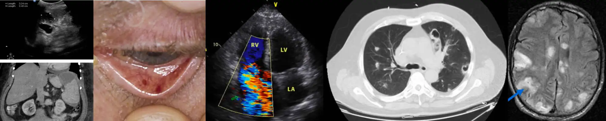
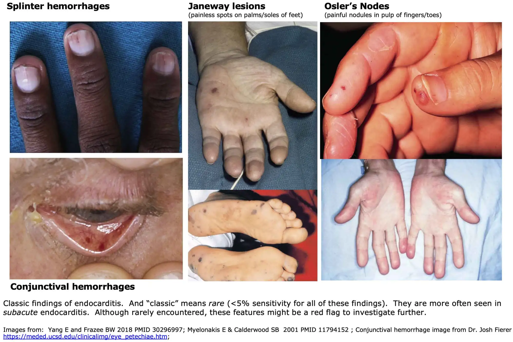
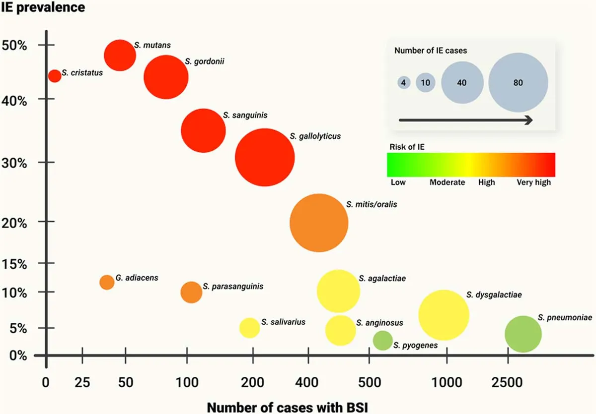
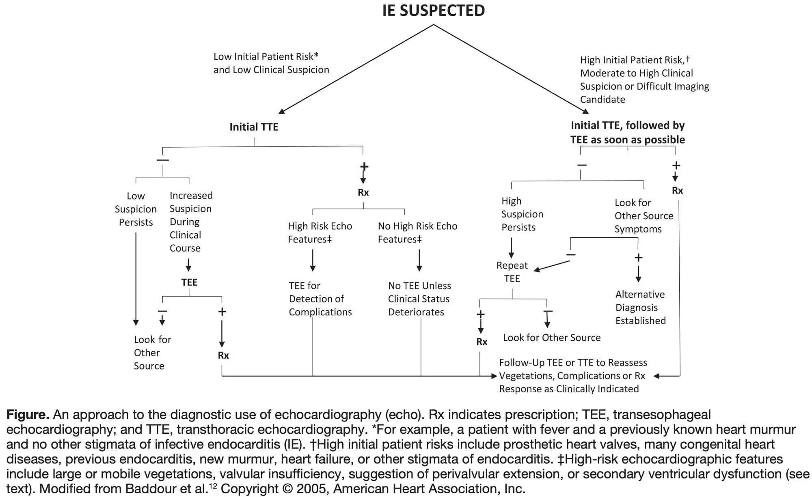
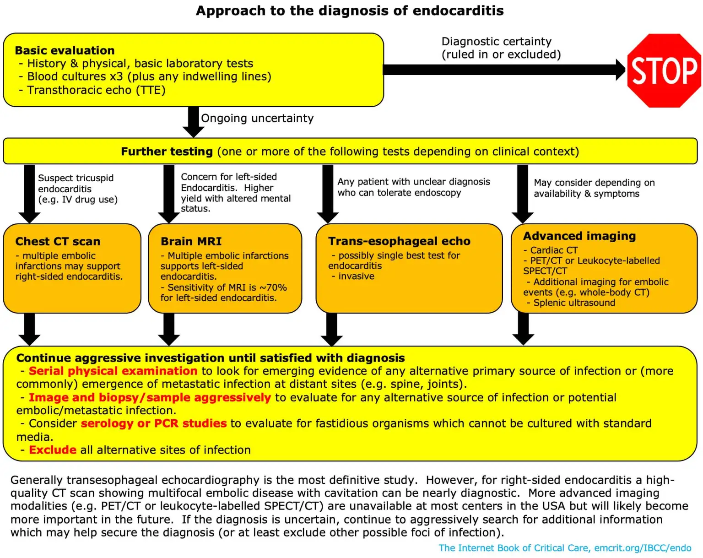
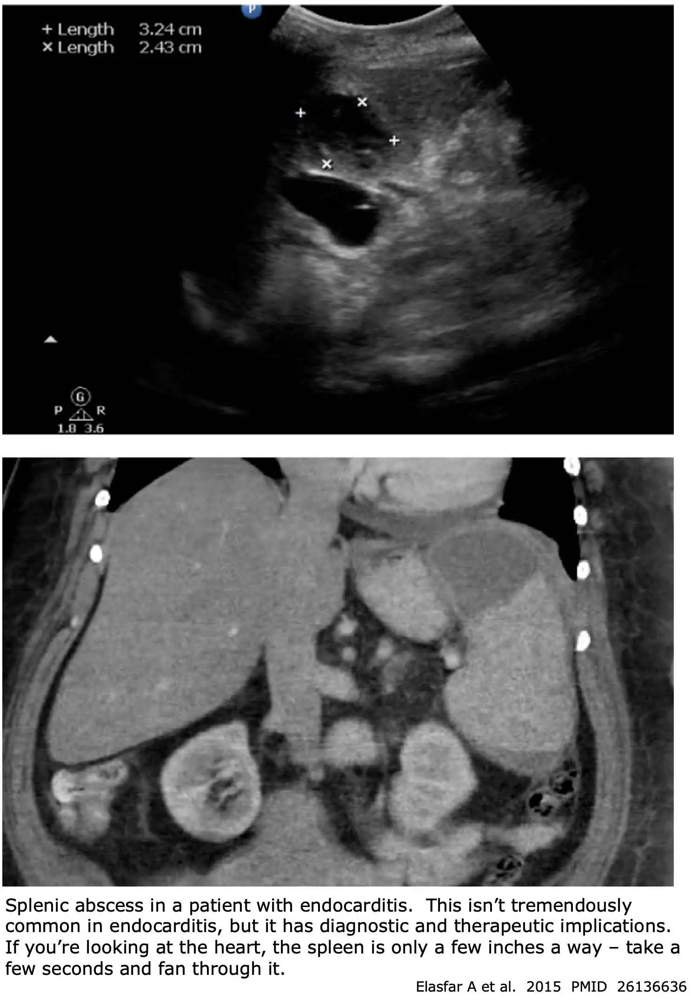
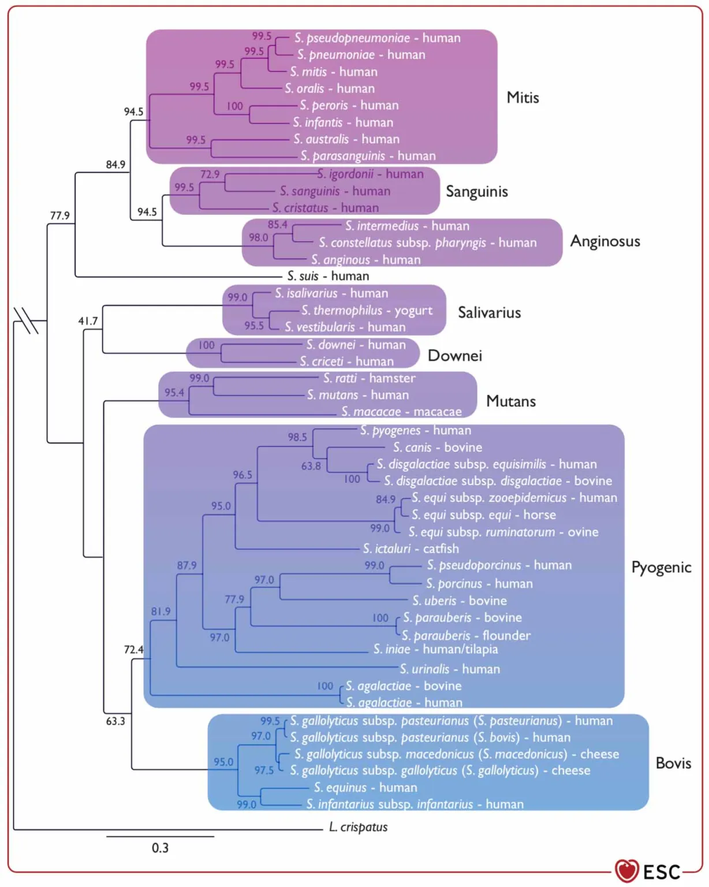

Rapid Reference: Endocarditis
back to contents
Initial Evaluation
- Peripheral blood cultures x3 (3 sets, at 3 different sites).
- Additional labs: urinalysis, C-reactive protein, rheumatoid factor.
- Echocardiography. 📖
- Consider CXR and/or CT chest if suspect right-sided endocarditis with septic pulmonary emboli.
- Consider evaluation for metastatic infection, if suspected (e.g., joints, spleen, brain, spine).
Antibiotic Therapy
- Empiric therapy: 📖
- Definitive therapy:
- Methicillin-sensitive Staph. 📖
- Methicillin-resistant Staph. 📖
- Enterococcus. 📖
- Streptococcus pneumoniae. 📖
- Beta-hemolytic Streptococci. 📖
- Oral Streptococci. 📖
- Granulicatella & Abiotrophia. 📖
- HACEK. 📖
Indications for Surgical Consultation 📖
- Valve regurgitation or fistula causing heart failure.
- Myocardial abscess.
- Vegetation enlargement, despite antibiotics.
- Persistent fever with positive cultures.
- Large vegetation with multiple embolic phenomena.
Follow Course
- Daily single blood culture to determine sterilization of blood.
- Telemetry monitoring +/- EKG to watch for heart block.
- Consider repeat echo (to evaluate for vegetation growth and/or worsening valvular dysfunction).
- Aggressive evaluation & management of any metastatic foci of infection (e.g., septic arthritis, splenic abscess).
When to Suspect Endocarditis
back to contents
At-Risk Patients
- Valvular heart disease, especially:
- Prior endocarditis (Hazard Risk of 65). 31175343
- Prosthetic valve (Hazard Ratio of 19). 31175343
- Surgical prosthetic valve.
- TAVR (transcatheter aortic valve replacement).
- Aortic stenosis.
- Any other endovascular hardware, especially:
- Pacemaker.
- PICC line or subcutaneous port (e.g., used for chemotherapy).
- LVAD (left ventricular assist device).
- IV drug use.
- Hemodialysis (17-fold increase in endocarditis risk). (Vincent 2023)
- Congenital heart disease.
- Older age, immunosuppression, recent hospitalization. 37622656
Clinical Presentation of Left-Sided Endocarditis
- Fever (~80% sensitivity) 37622656
- Fever plus IV drug use indicates ~15% risk of endocarditis. 30001813
- Flu-like, nonspecific illness (e.g., chills, night sweats, headache).
- Heart failure from valve regurgitation (~25%). 37622656
- Septic shock (e.g., Staph aureus causing acute bacterial endocarditis).
- Systemic emboli (e.g., ischemic stroke, kidney infarction; 25%):
- Stroke in a young patient is a classic endocarditis presentation.
- Delirium due to multifocal emboli (with no clinically obvious focal neurologic lesion).
Clinical Features of Right-Sided Endocarditis
- Fever.
- Septic pulmonary emboli:
- Will often initially mimic pneumonia (with a constellation of respiratory failure, pulmonary infiltrates, and fever) or pulmonary embolism.
- May eventually lead to hemoptysis, pneumothorax, or empyema.
- The key radiologic finding is multiple pulmonary nodules that eventually cavitate (more on this below 📖).
Traditional Examination Findings
- Fever (~80% sensitive).
- Signs of local infection at the site of a pacemaker or indwelling catheter.
- Classic findings for endocarditis (<5% sensitive, mostly seen in subacute endocarditis):
- Splinter hemorrhages.
- Conjunctival petechiae.
- Janeway lesions (red/blue macules on palms and soles).
- Osler's nodes (painful swelling in pulp of fingers).

Point-of-Care Echocardiography Findings
- Most sensitive findings:
- (1) Valvular regurgitation. This raises a concern for endocarditis, but must be interpreted in clinical context:
- Regurgitation is more worrisome if severe and found in a young patient with no prior cardiac disease (who shouldn't have regurgitation).
- Regurgitation is most worrisome if there is a recent echocardiogram without any regurgitation.
- Mild/trace regurgitation is nonspecific, especially in older patients.
- (2) Valve looks “funny” (thickened, etc).
- More specific findings:
- (1) Vegetation itself is seen.
- (2) Prosthetic valve partial dehiscence.
Lab Workup
back to contents
Peripheral Blood Cultures
- This is the single most important test to order for suspected endocarditis. Cultures must be obtained prior to starting antibiotics in suspected endocarditis, even if this causes a short treatment delay.
- Number of cultures:
- One “set” of cultures = two bottles (anaerobic & aerobic) drawn from a single location.
- Ideally three sets should be obtained from three different locations (two sets are OK if this isn't possible).
- Location of cultures:
- Ideally cultures should be obtained from a fresh peripheral stick.
- If this isn't feasible, obtain blood wherever you can get it. For example, obtaining blood from a freshly placed central line is OK.
- Timing
- In endocarditis, bacteremia is generally constant, so there is little rationale to space cultures out over time.
- Don't worry about the timing of cultures – the key thing is to get a lot of cultures and fill the culture bottles fully. (Get a lot of blood; more blood removed = higher likelihood of capturing a causative pathogen).

Among streptococcal species, the risk of endocarditis may be estimated based on species: 32580572
Other Labs to Consider
- Urinalysis consistent with glomerulonephritis is seen in ~60% of patients (proteinuria, microscopic hematuria).
- Rheumatoid factor (may help satisfy the diagnostic criteria for endocarditis).
- Acute-phase reactants (C-reactive protein):
- >95% sensitive for endocarditis.
- May be useful for subsequent follow-up, to help determine if the infection is responding to therapy.
Septic Pulmonary Emboli
back to contents
Tricuspid endocarditis may present in a unique fashion, with septic pulmonary emboli. These may mimic pneumonia or pulmonary embolism.
Clinical Features of Septic Pulmonary Emboli
- Fever.
- Cough, hemoptysis.
- Pleuritic chest pain.
- Dyspnea (pleural irritation often cause disproportionately prominent tachypnea).
Radiology of Septic Pulmonary Emboli
Lesion Distribution
- Multiple lesions are usually present.
- There is often a peripheral and lower lobe predominance (similar to other hematogenously disseminated lesions).
- Lesions are often based on the pleura (similar to sterile pulmonary infarcts).
Initial Lesion Appearance
- Round or wedge-shaped.
- Usually ~0.5-3 cm.
- Often ill-defined (sometimes with a surrounding halo sign). This may reflect local hemorrhage into adjacent lung tissue.
Subsequent Cavitation
- About half of lesions eventually cavitate.
- Cavitation may occur early. Thus, cavitation is usually seen in at least one lesion on CT scan.
- A characteristic feature is multiple lesions in different stages of cavitation (solid lesion ➡️ thick-walled cavity ➡️ thin-walled cavity). 29518379
- There is usually no air-fluid level.
Other Radiologic Findings That May Occur
- Pleural effusion, which may include empyema.
- Pneumothorax.
- Mediastinal lymphadenopathy can be seen in ~20%. (Rosado-de-Christenson 2022)
Radiological Differential Diagnosis Includes
- Pulmonary emboli.
- Pneumonia (including fungal pneumonia, necrotizing pneumonia).
- Pneumatoceles.
- Pulmonary metastases with subsequent cavitation.
- GPA (granulomatosis with polyangiitis).
Causes of Septic Pulmonary Emboli
- Right-sided endocarditis:
- Tricuspid endocarditis.
- Pacemaker-related endocarditis.
- Infected intravascular hardware, e.g.:
- Central line infection.
- Tunneled hemodialysis catheter infection.
- Port infection.
- Septic thrombophlebitis anywhere in the body:
- Septic internal jugular vein thrombosis (Lemierre's syndrome).
- Septic pelvic thrombophlebitis (e.g., due to septic abortion or post-puerperal uterine infection).
- Septic cavernous sinus thrombosis.
- Septic portal venous thrombosis (pylephlebitis).
Echocardiography
back to contents
Performance
- Sensitivity of transthoracic echocardiogram (TTE) is ~70% for native valve endocarditis or 50% for prosthetic valve endocarditis. 26320109
- Sensitivity of transesophageal echocardiogram (TEE) is ~96% for native valve endocarditis and ~92% for prosthetic valve endocarditis. 26320109
- Specificity isn't perfect. For example, false-positive vegetation may occur due to thrombi or marantic (non-infectious) vegetations.
- Note: These numbers are population averages. The sensitivity of TTE is best appreciated by reviewing the images.
- If the images are crystal clear, then the sensitivity is higher (and the added value of a TEE thus lower).
- If the windows are poor and images are limited, then the sensitivity is poor.
Advantages of Transthoracic Echocardiogram
- Noninvasive, useful to obtain as a baseline study.
- Easier to repeat serially if patient deteriorates.
- May be fully adequate to evaluate tricuspid endocarditis (without the need for TEE). 32299668
Advantages of Transesophageal Echocardiogram
- Greater sensitivity for endocarditis diagnosis, especially prosthetic valve endocarditis and left-sided endocarditis.
- Greater sensitivity for complications of endocarditis (e.g., aortic ring abscess, valve perforation).
2015 AHA/ACC guideline for which study to obtain

- (1) Everyone gets a baseline TTE to start.
- (2) TEE is usually indicated in the following situations.
- TTE is negative and persistent suspicion for endocarditis remains (e.g., persistent bacteremia).
- TTE is positive and shows high-risk features (large/mobile vegetations, valvular insufficiency, suggestion of perivalvular extension, or secondary ventricular dysfunction).
- Patient has a prosthetic valve or complex congenital heart disease.
- Patient has poor transthoracic imaging windows.
Repeat Echo: Consider for Hemodynamic Deterioration or Failure to Improve Clinically. Look for:
- Worsening valvular dysfunction.
- Development of aortic ring abscess.
- Enlarging vegetations despite antibiotics (associated with complications, need for surgery).
Diagnostic Strategies & Criteria
back to contents
Improvements in diagnostic radiology are increasingly helpful in ambiguous situations. When in doubt, further imaging data should be aggressively sought both to evaluate the diagnosis of endocarditis and also to look for competing diagnoses:


European Society of Cardiology criteria for infective endocarditis (these have replaced the Duke criteria)
Major Criteria
- (1) Blood cultures positive for endocarditis:
- (a) Typical microorganisms consistent with endocarditis from two separate blood cultures.
- Oral streptococci.
- Streptococcus gallolyticus (formerly: S. bovis).
- Staph aureus
- Enterococcus faecalis.
- HACEK group.
- Haemophilus species
- Aggregatibacter species
- Cardiobacterium hominis
- Eikenella corrodens
- Kingella species
- (b) Microorganisms consistent with endocarditis from continuously positive blood cultures:
- At least two positive blood cultures drawn >12 hours apart.
- Three of three, or a majority of ≧4 separate cultures of blood (with the first and last samples drawn ≧1 hour apart).
- (c) Single blood culture for Coxiella burnetii, or phase I IGG antibody titer >1:800.
- (2) Imaging positive for endocarditis: Vascular, perivalvular/periprosthetic and foreign material and metabolic lesions characteristic of endocarditis detected by any of the following techniques:
- Echocardiography.
- Cardiac CT.
- FDG-PET/CT.
- WBC SPECT/CT.
Minor Criteria
- (1) Predisposing conditions:
- Predisposing heart condition at high/intermediate risk for endocarditis.
- IV drug use.
- (2) Temperature >38C.
- (3) Embolic vascular dissemination (including asymptomatic imaging findings):
- Major systemic and pulmonary emboli/infarcts and abscesses.
- Hematogenous osteoarticular septic complications (e.g., spondylodiscitis).
- Mycotic aneurysms.
- Intracranial ischemic/hemorrhagic lesions.
- Conjunctival hemorrhages.
- Janeway lesions.
- (4) Immunological phenomena:
- Glomerulonephritis.
- Osler nodes and Roth spots.
- Positive rheumatoid factor.
- (5) Microbiological evidence:
- Positive blood culture data that doesn't meet the major criterion as noted above.
- Serological evidence of active infection with an organism consistent with endocarditis.
Endocarditis Classification
- Definite:
- Two major criteria.
- One major plus three minor criteria.
- Five minor criteria.
- Possible:
- 1 major and 1-2 minor criteria.
- 3-4 minor criteria.
- Rejected: Anything else.
Neurologic Complications
back to contents
Ischemic Stroke(s) & Septic Embolic Encephalitis
Clinical Presentation
- Endocarditis should be suspected in a patient presenting with stroke and features suggestive of endocarditis, such as:
- Fever.
- Unusually young age to be presenting with a stroke.
- IV drug use.
Epidemiology
- MRI reveals ischemic stroke(s) in ~70% of patients with left-sided endocarditis, but these are mostly clinical silent. Only ~25% of patients have a clinical stroke. 31175343
- Risk factors include:
- Vegetation >3 cm in size.
- Staphylococcus aureus.
- Mitral valve involvement.
- Anticoagulant therapy.
Imaging
- Ischemic infarcts tend to be small, multiple, of variable ages, distributed among various vascular territories, and often concentrated along peripheral watershed territory or the grey-white border. 31964490 They may also cause microbleeds in the cortical regions (notable on MRI SWE/GRE sequences). 33741796
Management
- Endovascular intervention can be used for the management of acute, large-vessel septic embolism. However, thrombolytic therapy isn't recommended. 37622656
- Antibiotic therapy is needed for the management of endocarditis. Consideration should be given to selecting a regimen with adequate penetration of the brain.
- Anticoagulation: discussed below ⚡️
- Cardiac surgery is generally safe in the context of embolic infarcts (and, indeed, repeated emboli may be an indication for surgery).
- Early surgery may reduce the risk of recurrent embolic events.
- Microbleeds also aren't a contraindication to surgery. The European Society of Cardiology guidelines states: “The lack of association with parenchymal hemorrhage and the absence of postoperative neurological complications in patients with microbleeds suggest that microbleeds should not postpone surgery where indicated.” 37622656
- For patients with poor neurologic status (e.g., coma or extensive damage leading to poor functional prognosis), the value of cardiac surgery may be unclear. 37622656
Other Neurological Complications
Mycotic Aneurysms (~10%)
- The most common causes are Viridans group Streptococcus or Staphylococcus aureus.
- Bacterial mycotic aneurysms are most often located within distal branches of the MCA (middle cerebral artery). Alternatively, fungal mycotic aneurysms tend to involve the circle of Willis.
- Clinical presentation often results from subarachnoid hemorrhage or intracerebral hemorrhage (although infarction may also occur). Mycotic aneurysm rupture carries a mortality of 80%. (Louis 2021)
- Treatment of unruptured aneurysm:
- Antibiotic therapy and up-front interventional management may have similar outcomes. 33868550
- Endovascular or neurosurgical intervention may be required for large aneurysms, or aneurysms which are progressively enlarging despite antibiotic therapy. Among patients undergoing cardiac surgery, it might be desirable to intervene on the aneurysm prior to surgery.
Cerebral Hemorrhage (4%)
- Hemorrhage may occur via various mechanisms:
- Hemorrhagic transformation of ischemic stroke.
- Rupture of a mycotic aneurysm.
- Following intracranial hemorrhage, cardiac surgery should ideally be delayed for >1 month. 37622656
Meningitis (1%)
- Most frequently due to S. aureus. 17290733
- Meningitis is also associated with endocarditis due to Streptococcus pneumoniae.
Brain Abscess
- Rare; occurs in 0.1% of patients.
Empiric Therapy
back to contents
Two agents are preferred for initial therapy, for a variety of reasons. 37523190 Vancomycin levels are often initially subtherapeutic, so relying on vancomycin monotherapy is problematic. Additionally, vancomycin is a suboptimal therapy for the most common causes of endocarditis (e.g., MSSA). Daptomycin monotherapy may lead to the emergence of heteroresistance, so daptomycin monotherapy is often avoided as well.
#1/2: principal agent: generally vancomycin or daptomycin
Vancomycin
- Advantages:
- Inexpensive and widely available.
- Reasonable track record for a variety of infections.
- Someone probably started it already.
- Disadvantages:
- Nephrotoxicity.
- Vancomycin levels are often subtherapeutic for the first 1-2 days of therapy, before the dose is optimized.
- Will miss some drug-resistant enterococci.
Daptomycin
- Dose:
- 8-10 mg/kg/d for S. aureus.
- 10-12 mg/kg/day to cover enterococcus.
- Advantages:
- Broader coverage for gram positive than vancomycin (including resistant enterococci).
- Lack of nephrotoxicity.
- More reliable pharmacokinetics than vancomycin.
- Single dose provides coverage for 48 hours in patient with GFR <30 ml/min.
- Disadvantages:
- Daptomycin doesn't cover pneumonia, which might be problematic among patients with right-sided endocarditis and septic pulmonary emboli.
(Linezolid)
- Advantages:
- Excellent tissue penetration (including lungs, meninges).
- Broad spectrum of activity (including vancomycin-resistant enterococci).
- Easy to dose correctly and achieve therapeutic levels (especially in younger patients with augmented renal clearance).
- Disadvantages:
- Risk of serotonin syndrome (if concomitant serotonergic medications).
- Efficacy in bloodstream infections is controversial.
#2/2: Second Agent
Native Valve Endocarditis
- Cefazolin:
- Preferred for:
- Acute bacterial endocarditis.
- If Staph aureus is suspected (e.g., skin infection, traumatic infection, or bone/joint infection). 37523190
- In MSSA, cefazolin is superior to ceftriaxone. Cefazolin plus vancomycin as initial therapy seems to have better efficacy for methicillin-sensitive Staph aureus (MSSA). 23985343, 22006007
- In MRSA, the combination of vancomycin plus cefazolin is synergistic in vivo, without evidence of increased nephrotoxicity. 32044943, Trinh et al., 22848719
- Cefazolin and vancomycin act at different stages of cell wall synthesis, so they may function in a synergistic fashion. 10390234
- Ceftriaxone (consider: 2 grams IV q12hr):
- Preferred for:
- Subacute bacterial endocarditis.
- Oral/gastrointestinal source is suspected.
- Ceftriaxone has better coverage of oral streptococci and HACEK organisms than cefazolin.
- Ceftriaxone at a dose of 2 grams IV q12 hours may provide adjunctive therapy for enterococcal endocarditis.
- Ampicillin-sulbactam:
- Preferred for:
- Urinary source suspected (ampicillin-sulbactam has better enterococcal coverage).
- Subacute bacterial endocarditis (recommended in AHA 2015 guideline for this).
- Broader spectrum coverage is desired to treat another possible infectious focus (e.g., possible intra-abdominal infection).
- Rationale: Ampicillin-sulbactam probably isn't quite as good for Staph. aureus as compared to cefazolin. However, ampicillin-sulbactam provides better coverage for enterococcus, oral streptococci, HACEK organisms, and other gram-negative organisms.
IV Drug Use (Or Other Risk for Gram-negative)
- Patients with IV drug use are at risk for a broader spectrum of pathogens (including Pseudomonas or Serratia species). 37523190
- Piperacillin-tazobactam may be ideal (to add coverage of enterococcus and gram-negatives).
Prosthetic Valve Endocarditis, early (<3 months)
- Need to cover for nosocomially-acquired infections, including gram-negative endocarditis. Selection may vary depending on local antibiograms. Options include the following:
- Piperacillin-tazobactam.
- Carbapenem.
- Cefepime.
- Ceftriaxone.
Prosthetic Valve Endocarditis, late (>3 months)
- Ceftriaxone 2 grams IV q12 hours:
- Ceftriaxone is recommended in AHA 2015 guideline.
- Enterococcal dosing (2 grams q12 hours) may be reasonable here.
- Ampicillin-sulbactam.
- Cefazolin.
Definitive Therapy
back to contents
Some general comments about definitive therapy:
- Rifampin should only be used in foreign body infections (e.g., prosthetic valve endocarditis) after 3-5 days of effective antibiotic therapy, once the bacteremia has been cleared. Rifampin may be useful for treatment of dormant bacteria, but detrimental in the treatment of replicating bacteria. 37622656
- ⚠️ The following sections focus on initial therapeutic regimens (e.g., for the first 1-2 weeks of treatment). Duration of therapy and transition to oral therapy is deferred to infections disease specialists.
MSSA (Methicillin Sensitive S. aureus) & Methicillin-sensitive Coagulase-negative Staph
General Treatment
- Preferred primary therapy:
- Cefazolin 2 grams IV q8hrs
- No high-quality data that the inoculum effect is clinically important. Recent data suggests that cefazolin is equally effective against MSSA, with a lower adverse event rate than oxacillin/nafcillin. 37523190
- Nafcillin/oxacillin/(flu)cloxacillin 2 grams IV q4hrs
- May be preferred therapy for treatment of methicillin-sensitive coagulase-negative Staphylococci.
- Theoretically, these may have superior penetration of the CNS as compared to cefazolin so they might be preferred in patients with CNS emboli. However, recent data indicates that cefazolin has reasonable CNS penetration as well.
- Adjunctive for prosthetic valve endocarditis, add rifampin 300 mg TID (either PO or IV). 37622656
- Alternatives:
- Vancomycin dosed by level.
- Daptomycin 8-10 mg/kg/d plus another anti-staphylococcal antibiotic (e.g., ceftaroline). 37622656
- Linezolid. 37523190
- Aminoglycoside is no longer recommended. 37622656
Staph lugdunensis (“slug”)
- This is a relatively virulent species of coagulase-negative staphylococci.
- S. lugdunensis has a high rate of perivalvular extension and metastatic infection.
- This should always be taken seriously (it is less likely to be a contaminant).
- S. lugdunensis is uniformly susceptible to most antibiotics including methicillin (treatment per regimens listed right above).
MRSA (Methicillin-resistant S. aureus) & Methicillin Resistant Coagulase-negative Staphylococci
- Preferred primary therapy:
- Vancomycin dosed by level.
- Daptomycin 10 mg/kg/d plus {cloxacillin or ceftaroline}. 37622656 ESC guidelines recommend the addition of a beta-lactam antibiotic, whereas WikiGuidelines do not. 37622656, 37523190
- Adjunctive for prosthetic valve endocarditis, add rifampin 300 mg TID (either PO or IV). 37622656
- Alternatives: Possibly linezolid 600 mg BID. 37523190
- ⚠️ If the MIC for vancomycin is >1 ug/mL, vancomycin should be avoided.
Enterococcus
General comments on enterococcal endocarditis
- Third leading cause of endocarditis, accounting for ~10% of non-IVDU endocarditis.
- Enterococcus tends to be indolent, so this may be somewhat less common (<10%) among critically ill patients. Unfortunately, enterococcus is difficult to kill (often requires synergistic combination of two drugs).
Beta-lactam Susceptible
- Ampicillin 2 grams IV q4hr + Ceftriaxone 2 grams IV q12 hours.
- Preferred to reduce risk of nephrotoxicity with gentamicin.
- Alternative: Ampicillin 2 grams IV q4hr + gentamicin.
- Cannot be used for strains that are gentamicin-resistant.
Resistant to Beta-lactam; Sensitive to Vancomycin
- Vancomycin plus gentamicin.
- ⚠️ This is a highly nephrotoxic regimen, if nephrotoxicity develops the regimens below for vancomycin-resistant enterococci could be considered.
VRE (Vancomycin-resistant Enterococcus spp)
- Daptomycin 10-12 mg/kg/day plus one of the following beta-lactams: 37622656
- Ampicillin 300 mg/kg/day in 4-6 divided doses.
- Ceftaroline 1800 mg/day in three divided doses.
- Alternative: Linezolid 600 mg BID. 37622656
- Linezolid achieved cure in 17/22 patients with Enterococcus faecium. 12522747
Streptococcus pneumoniae
- ⚠️ S. pneumoniae endocarditis is often associated with meningitis, consider meningeal dosing of ceftriaxone if there is any concern for possible meningitis.
- Sensitivity unknown:
- Ceftriaxone 2 grams IV q12 (will provide coverage for PCN-sensitive or PCN-resistant strains)
- Penicillin-sensitive:
- May treat with penicillin, cefazolin, or ceftriaxone.
- Penicillin-resistant, ceftriaxone sensitive:
- Ceftriaxone-resistant (MIC >2 ug/mL):
- High-dose ceftriaxone seems to work regardless (e.g. 2 grams IV q12, as long as no meningeal involvement).
- For meningeal involvement, consider addition of vancomycin and rifampin (AHA guidelines).
Beta-hemolytic Streptococci (Groups A, B, C, F, G)
- Group A streptococci:
- Uniformly susceptible to beta-lactams.
- Penicillin G is the treatment of choice; ceftriaxone is a reasonable alternative.
- Groups B, C, F, G:
- May be slightly harder to kill than Group A streptococci.
- The cornerstone of therapy is still penicillin or ceftriaxone, but addition of gentamicin for the first two weeks may be considered (AHA guidelines) or recommended (ESC guidelines).
- The most recent ESC guidelines recommend treating these the same as oral streptococci (see section below). 37622656
Oral Streptococci & Streptococcus gallolyticus Group (Non-pyogenic Strep)
This includes all streptococcal species except for the pyogenic group:

Penicillin Sensitive (MIC <0.5 ug/ml)
- Preferred primary treatment:
- Ceftriaxone 2 grams daily
- Penicillin 4 MU q4hr.
- Ampicillin/amoxicillin 2 grams q4hr
- Plus adjunctive gentamicin if MIC 0.25-0.5 ug/ml.
- Alternatives:
- Vancomycin dosed by level
- Linezolid 600 mg q12hr. 37523190
Penicillin Resistant (MIC >0.5-2 ug/ml)
- Preferred primary treatment:
- Ceftriaxone 2 grams daily
- Vancomycin dosed by level
- Plus adjunctive gentamicin if MIC 0.5-2 ug/ml (avoid the combination of vancomycin plus gentamicin if possible).
- Alternative: Linezolid 600 mg q12hr. 37523190
Granulicatella and Abiotrophia (Formerly: Nutritionally Variant Streptococci)
- Often cause prolonged disease course with large vegetations and high complications rates.
- Treatment:
- Penicillin G, ceftriaxone, or vancomycin.
- Combined with aminoglycoside for at least two weeks in the case of prosthetic valve endocarditis. 37622656
HACEK species (Haemophilus, Aggregatibacter, Cardiobacterium, Eikenella, Kingella)
- These are gram-negative bacilli that are fastidious and grow slowly.
- Standard therapy: ceftriaxone 2 grams IV daily.
- Alternative therapy: Levofloxacin or ciprofloxacin.
Surgery
back to contents
Potential indications for surgery in left-sided endocarditis
- (1) Heart failure (due to valve dysfunction or fistulae).
- (2) Uncontrolled infection:
- Myocardial abscess, heart block.
- Vegetation enlargement despite antibiotics.
- Persistent fever and positive blood cultures for >7 days, with exclusion of other foci of infection (e.g., splenic abscess).
- Fungal endocarditis or highly resistant organism.
- (3) Prevention of systemic embolization:
- Huge vegetation (>15 mm).
- Large vegetation (>10 mm) with one or more embolic episodes despite antibiotic therapy.
Potential indications for surgery in right-sided endocarditis
- Surgery plays smaller role:
- (a) Better outcomes compared to left-sided endocarditis.
- (b) Many patients have ongoing IV drug abuse, may infect prosthetic valve.
- Indications to consider surgery:
- Right heart failure due to severe tricuspid regurgitation with poor response to medical therapy.
- Failure of antibiotics to clear infection.
- Tricuspid valve vegetation >20 mm and recurrent pulmonary embolism despite antibiotics.
Contraindications to surgery
- Inability to tolerate anticoagulation during bypass (e.g. due to recent intracranial hemorrhage or large ischemic stroke).
- In this situation, surgery may need to be delayed by four weeks (if possible).
Anticoagulation
back to contents
⚠️ Little solid data exists on this topic, so decisions may need to be made based on patient specifics and clinical judgement. In the context of endocarditis, anticoagulation may increase the risk of hemorrhagic transformation from a septic cerebral infarct. Unfortunately, it's unclear how strong of a contraindication this should be.
Guideline Recommendations
- “The use of anticoagulation in patients with left-sided endocarditis doesn't seem to have an effect on the risk of stroke, cerebrovascular hemorrhage, or mortality at 10 weeks and therefore continuation of anticoagulation in patients with left-sided endocarditis and with a preexisting indication is recommended in the absence of other contraindications.” European Society of Cardiology; 37622656
- Embolic stroke due to endocarditis is a weak contraindication to anticoagulation (although a large territorial infarction would be a stronger contraindication). Nonetheless, anticoagulation can generally be utilized if there is a strong indication for it. European Society of Cardiology; 37622656
- Continuation of long-term anti-platelet therapy may be considered for patients without bleeding complications (AHA 2015 guidelines; Class IIb).
- Oral anticoagulation should generally be transitioned to unfractionated heparin if:
- Surgery or other procedures are indicated.
- Ischemic stroke has occurred.
Treatment for Opioid Use Disorder
back to contents
- Endocarditis may in some ways be viewed as a symptom of the larger disease of opioid use disorder.
- Patients with opioid use disorder are at enormous risk of endocarditis (e.g. 2-5% per year risk with active IV drug use). 30001813
- One episode of endocarditis is a risk factor for recurrence (due to damage to the heart valves). Therefore, if patients continue to use IV drugs then they are at astronomically high risk of recurrent endocarditis.
- Unfortunately, inpatient medical systems often fail to deliver medication-assisted therapy. One study from a top teaching hospital in 2016 reported that merely 8% of patients admitted with endocarditis and IV drug use were discharged with a plan for medication-assisted therapy. 26597670
- (More on buprenorphine & medication-assisted therapy here.)
Pitfalls
back to contents
- Staph lugdunensis (“slug”) is a type of coagulase-negative staph which tends to cause invasive infections (more than other types of coagulase-negative Staph). Be careful about writing this off as a contaminant.
- Exactly which patients need surgery can be confusing. Infectious disease should always be consulted in these cases. If there is any consideration for possible surgery, then cardiology and cardiothoracic surgery should be involved as well.
- Thrombolytic therapy for ischemic stroke is contraindicated in the context of infectious endocarditis.
- Do not fail to provide aggressive medication-assisted therapy for associated opioid use disorder.
- Be careful about the use of vancomycin mono-therapy for empiric treatment of endocarditis. If you are going to pursue this, check levels early (ideally two levels following the initial dose) and make absolutely sure that the vancomycin is dosed properly.
References
- 10390234 Climo MW, Patron RL, Archer GL. Combinations of vancomycin and beta-lactams are synergistic against staphylococci with reduced susceptibilities to vancomycin. Antimicrob Agents Chemother. 1999 Jul;43(7):1747-53. doi: 10.1128/AAC.43.7.1747
- 12522747 Birmingham MC, Rayner CR, Meagher AK, Flavin SM, Batts DH, Schentag JJ. Linezolid for the treatment of multidrug-resistant, gram-positive infections: experience from a compassionate-use program. Clin Infect Dis. 2003 Jan 15;36(2):159-68. doi: 10.1086/345744
- 16505987 Khatib R, Saeed S, Sharma M, Riederer K, Fakih MG, Johnson LB. Impact of initial antibiotic choice and delayed appropriate treatment on the outcome of Staphylococcus aureus bacteremia. Eur J Clin Microbiol Infect Dis. 2006 Mar;25(3):181-5. doi: 10.1007/s10096-006-0096-0
- 17173215 Stryjewski ME, Szczech LA, Benjamin DK Jr, Inrig JK, Kanafani ZA, Engemann JJ, Chu VH, Joyce MJ, Reller LB, Corey GR, Fowler VG Jr. Use of vancomycin or first-generation cephalosporins for the treatment of hemodialysis-dependent patients with methicillin-susceptible Staphylococcus aureus bacteremia. Clin Infect Dis. 2007 Jan 15;44(2):190-6. doi: 10.1086/510386
- 17664322 Lodise TP Jr, McKinnon PS, Levine DP, Rybak MJ. Impact of empirical-therapy selection on outcomes of intravenous drug users with infective endocarditis caused by methicillin-susceptible Staphylococcus aureus. Antimicrob Agents Chemother. 2007 Oct;51(10):3731-3. doi: 10.1128/AAC.00101-07.
- 22006007 Hagihara M, Wiskirchen DE, Kuti JL, Nicolau DP. In vitro pharmacodynamics of vancomycin and cefazolin alone and in combination against methicillin-resistant Staphylococcus aureus. Antimicrob Agents Chemother. 2012 Jan;56(1):202-7. doi: 10.1128/AAC.05473-11
- 23985343 McConeghy KW, Bleasdale SC, Rodvold KA. The empirical combination of vancomycin and a β-lactam for Staphylococcal bacteremia. Clin Infect Dis. 2013 Dec;57(12):1760-5. doi: 10.1093/cid/cit560
- 26320109 Habib G, Lancellotti P, Antunes MJ, et al; ESC Scientific Document Group. 2015 ESC Guidelines for the management of infective endocarditis: The Task Force for the Management of Infective Endocarditis of the European Society of Cardiology (ESC). Endorsed by: European Association for Cardio-Thoracic Surgery (EACTS), the European Association of Nuclear Medicine (EANM). Eur Heart J. 2015 Nov 21;36(44):3075-3128. doi: 10.1093/eurheartj/ehv319.
- 26373316 Baddour LM, Wilson WR, Bayer AS, et al. American Heart Association Committee on Rheumatic Fever, Endocarditis, and Kawasaki Disease of the Council on Cardiovascular Disease in the Young, Council on Clinical Cardiology, Council on Cardiovascular Surgery and Anesthesia, and Stroke Council. Infective Endocarditis in Adults: Diagnosis, Antimicrobial Therapy, and Management of Complications: A Scientific Statement for Healthcare Professionals From the American Heart Association. Circulation. 2015 Oct 13;132(15):1435-86. doi: 10.1161/CIR.0000000000000296.
- 26597670 Rosenthal ES, Karchmer AW, Theisen-Toupal J, Castillo RA, Rowley CF. Suboptimal Addiction Interventions for Patients Hospitalized with Injection Drug Use-Associated Infective Endocarditis. Am J Med. 2016 May;129(5):481-5. doi: 10.1016/j.amjmed.2015.09.024.
- 28789974 Bartash R, Nori P. Beta-lactam combination therapy for the treatment of Staphylococcus aureus and Enterococcus species bacteremia: A summary and appraisal of the evidence. Int J Infect Dis. 2017 Oct;63:7-12. doi: 10.1016/j.ijid.2017.07.019.
- 30001813 Long B, Koyfman A. Infectious endocarditis: An update for emergency clinicians. Am J Emerg Med. 2018 Sep;36(9):1686-1692. doi: 10.1016/j.ajem.2018.06.074
- 30928559 Weis S, Kesselmeier M, Davis JS, Morris AM, Lee S, Scherag A, Hagel S, Pletz MW. Cefazolin versus anti-staphylococcal penicillins for the treatment of patients with Staphylococcus aureus bacteraemia. Clin Microbiol Infect. 2019 Jul;25(7):818-827. doi: 10.1016/j.cmi.2019.03.010
- 31175343 Iung B, Duval X. Infective endocarditis: innovations in the management of an old disease. Nat Rev Cardiol. 2019 Oct;16(10):623-635. doi: 10.1038/s41569-019-0215-0
- 32299668 Hubers SA, DeSimone DC, Gersh BJ, Anavekar NS. Infective Endocarditis: A Contemporary Review. Mayo Clin Proc. 2020 May;95(5):982-997. doi: 10.1016/j.mayocp.2019.12.008
- 32757525 Chambers HF, Bayer AS. Native-Valve Infective Endocarditis. N Engl J Med. 2020 Aug 6;383(6):567-576. doi: 10.1056/NEJMcp2000400
- 9781138297067 Cunha, B. A., & Cunha, C. B. (2020). Infectious diseases and antimicrobial stewardship in critical care medicine. CRC Press.
- 37523190 McDonald EG, Aggrey G, Tarik Aslan A, Casias M, Cortes-Penfield N, Dong MQD, Egbert S, Footer B, Isler B, King M, Maximos M, Wuerz TC, Azim AA, Alza-Arcila J, Bai AD, Blyth M, Boyles T, Caceres J, Clark D, Davar K, Denholm JT, Forrest G, Ghanem B, Hagel S, Hanretty A, Hamilton F, Jent P, Kang M, Kludjian G, Lahey T, Lapin J, Lee R, Li T, Mehta D, Moore J, Mowrer C, Ouellet G, Reece R, Ryder JH, Sanctuaire A, Sanders JM, Stoner BJ, So JM, Tessier JF, Tirupathi R, Tong SYC, Wald-Dickler N, Yassin A, Yen C, Spellberg B, Lee TC. Guidelines for Diagnosis and Management of Infective Endocarditis in Adults: A WikiGuidelines Group Consensus Statement. JAMA Netw Open. 2023 Jul 3;6(7):e2326366. doi: 10.1001/jamanetworkopen.2023.26366
- 37622656 Delgado V, Ajmone Marsan N, de Waha S, Bonaros N, Brida M, Burri H, Caselli S, Doenst T, Ederhy S, Erba PA, Foldager D, Fosbøl EL, Kovac J, Mestres CA, Miller OI, Miro JM, Pazdernik M, Pizzi MN, Quintana E, Rasmussen TB, Ristić AD, Rodés-Cabau J, Sionis A, Zühlke LJ, Borger MA; ESC Scientific Document Group. 2023 ESC Guidelines for the management of endocarditis. Eur Heart J. 2023 Oct 14;44(39):3948-4042. doi: 10.1093/eurheartj/ehad193